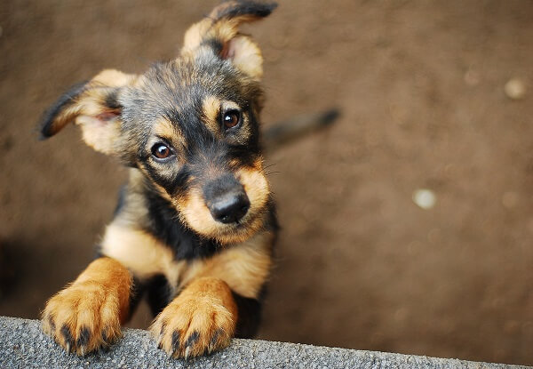

Por qué adoptar un animal?
Desafortunadamente sigue siendo habitual que algunos propietarios que compran un cachorro de forma
impulsiva decidan abandonarlo o dejarlo en una protectora de perros cuando se dan cuenta de que
convivir con él implica un compromiso

Este tipo de personas no suele informarse debidamente del esfuerzo que conlleva educar a un cachorro
al plantearse por qué adoptar un perro , y tampoco acostumbra a tener en cuenta que cada raza de
perro tiene su temperamento y ss peculiaridades, hecho que puede influir mucho durante la
convivencia y que precisa de conocimiento previo.
Gracias a las campañas de concienciación social, y a la labor realizada por las protectoras,
refugios, albergues de perros y demás entidades sin ánimo de lucro, cada vez hay más personas que
optan por la adopción cuando deciden adquirir un perro, ya sea a través de ellos, o mediante la vía
de adopción entre particulares (amigos y conocidos principalmente).
Como verás a continuación, las razones que sostienen por qué adoptar un perro son varias, y lo
suficientemente relevantes para hacerlo:
1. Segunda oportunidad para un perro
En la mayoría de los casos, adoptar significa darle una segunda oportunidad a un animal que ha
sufrido un proceso de abandono, y en ocasiones maltrato. Acogerlo en tu casa de por vida y darle la
estabilidad, los cuidados y el cariño que necesita va a ayudarlo a que recupere su confianza y su
autoestima.
2. Agradecimiento y vínculo afectivo con un perro adoptado
A cambio, la recompensa que vas a obtener es infinita. Aunque algunos de los perros que han pasado
por estos procesos pueden ser temerosos o asustadizos, su capacidad de agradecimiento a medida que
se habitúen a tu familia o a ti llenará de felicidad vuestro día a día, porque adoptar un perro
contribuirá a que generéis un vínculo de amor mutuo e incondicional.
3. Elegir perro de adopción
A diferencia de lo que mucha gente cree, en estas entidades puedes encontrar perros de todas las
edades y de múltiples razas. Las ventajas asociadas son que además puedes obtener información
detallada acerca de sus características y temperamento, conocer su historia, acogerlos
temporalmente, e incluso ir a pasearlos previamente antes de formalizar la adopción. Y éstos son
factores muy importantes para asegurarte de que escoges a tu compañero ideal.
4. Contribuyes a ayudar a los perros en adopción
Cuando adoptas a un perro abandonado estás contribuyendo a reducir el número de perros que viven en
dichas entidades, y a mejorar las condiciones (recursos y fondos) de los que seguirán esperando que
alguien los adopte.
5. Cuánto cuesta adoptar un perro
El coste de la adopción de un perro es muy inferior al que puede derivarse de la compra. El precio
medio oscila entre los 180€ (cachorros menores de 4 meses) y los 100€ (perros adultos hasta 7 años).
Los perros mayores de 10 años suelen ofrecerse de manera gratuita. Todos los perros son entregados
con su cartilla de vacunas al día, esterilizados, desparasitados interna y externamente, y con el
microchip. Es decir, el coste viene justificado por los gastos veterinarios asumidos por la entidad,
y es mayor en el caso de los cachorros debido al nivel de atención veterinaria que precisan durante
los primeros 6 meses de vida.
6. Pasos para adoptar un perro
El proceso de adopción se realiza de forma controlada y profesional, y se lleva a cabo mediante un
protocolo orientado a garantizar el bienestar del perro a tu lado, al ser ésta la única manera de
asegurar que el perro no volverá a pasar por situaciones que puedan traumatizarlo. Pese a lo que
pueda pensarse, es un proceso relativamente rápido, en el que la entidad se involucra al 100%,
ofreciendo incluso consejo y asesoramiento sobre todo lo referente al perro si lo necesitas.